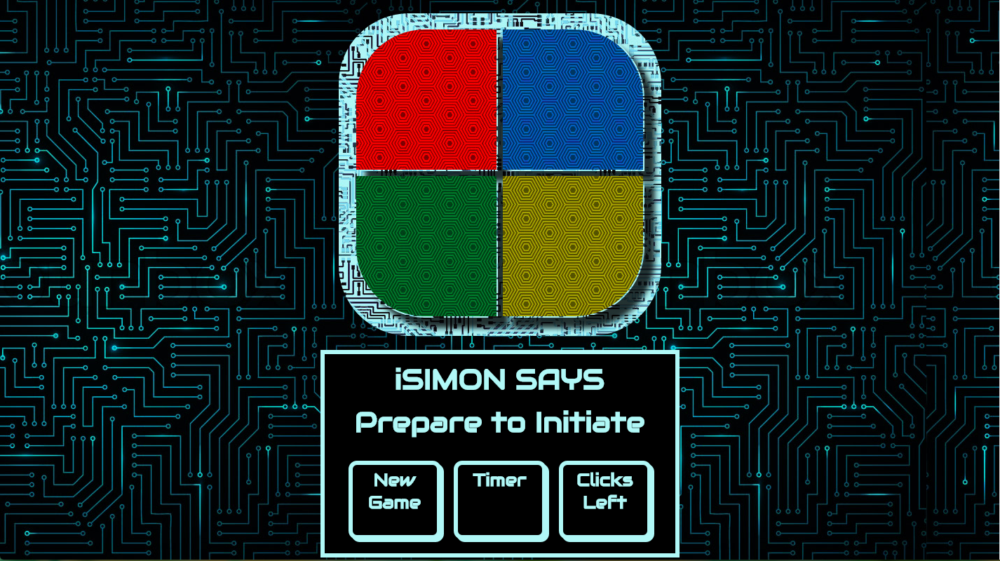

CODING
View all of my personal and ongoing coding programs.
iSimon Says

My futuristic take on the classic Simon Says game where one must repeat exactly the sequence of colors that Simon says to repeat. I used JavaScript in conjunction with a jQuery library in order to successfully program the logic behind the game.
By combining recursive functions with the setTimeout and setInterval methods, the "computer" is able to remember and animate the sequence of colors as well as generate a new random color for the next round.
The computer compares two arrays, one containing the sequence of colors it created and one containing the sequence of colors that the user clicked on, in order to determine whether or not the user has successfully repeated the correct pattern.
Decade Footwear
An ongoing project: I plan on creating a fully-functional shoe shopping website for my cousin and his shoe business, Decade Footwear. The foundation for this website so far is built on Ruby on Rails.
I have successfully implemented a shopping cart feature as well as an admin/user login and the ability for admin to perform CRUD actions on the shoe inventory. I am currently laying out the plans to implement other shopping site features as well as implement an Angular front-end.
Hey, I'm Bored!
In Collaboration with: Donovan Allen, Juliet Berman, and Diana Gobar
A fun application that aims at helping people find nearby events at a last-minute notice... or when they simply need their boredom relieve right away!
This is a MEAN stack (MongoDB, Express, Angular, Node) application that utilizes a RESTful server and integration with a third party API that specializes in listing nearby local events. The application retrieves relevant data based on the location that the user put in as well as the interest that they select!
The current API unfortunately has a lot of bugs within its data compilation and we are currently seeking a new API to implement.
Block Party

A color-based game that I created using React and vanilla JavaScript. The objective of the game is to get every grid on the gameboard to be the same color. In order to do that, just click on a grid and watch as the adjacent grids change color!
The seperation of concerns as well as the concept of components made the functionality much easier to implement as well as avoiding bugs and glitches.